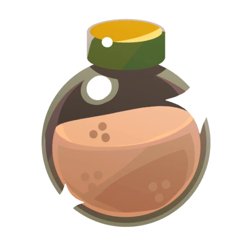

Фонтан спить — натисни, щоб оживити пустелю
Бірюзова вода пробудила оазис!

Silky SandФонтан спить — натисни, щоб оживити пустелю
Бірюзова вода пробудила оазис!
Шовковистий пісок Скляної пустелі, що переливається золотисто-рожевим відливом.